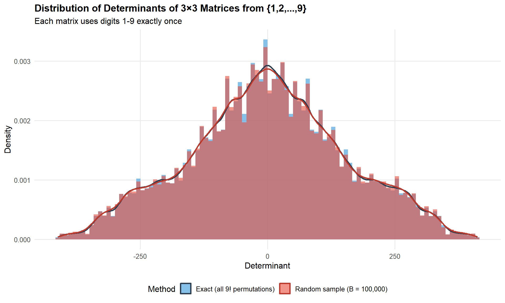
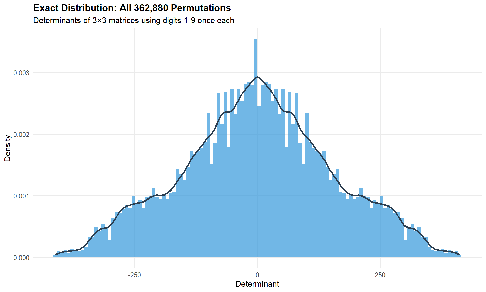
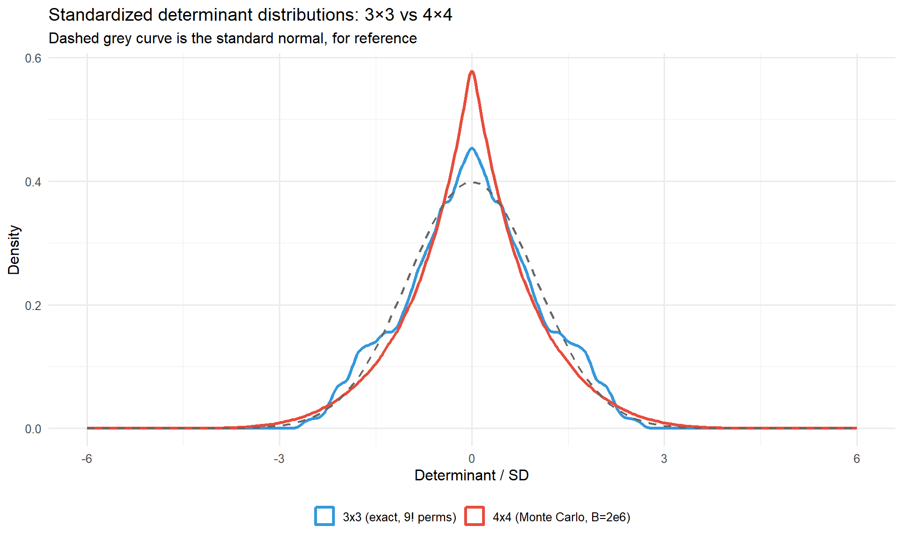

Code
library(ggplot2)
library(dplyr)
library(arrangements)
library(moments)
options(scipen = 999)From the time, long ago, I first studied linear algebra, I’ve always had a fascination with the idea of the determinant of a square matrix, \(\text{det}(\mathbf{A}) \equiv | \mathbf{A} |\). You just take your matrix \(\mathbf{A}\), which could be \((2 \times 2)\), or \((10 \times 10)\), or \((100 \times 100)\), … and \(| \mathbf{A} |\) turns that into a single number, that expresses many of its properties—algebraic, geometric and statistical.
In short, the determinant \(| \mathbf{A} |\) is a measure of the “size” of \(\mathbf{A}\). So, when we’re talking about the covariance matrix \(\mathbf{S}\) of data variables, \(| \mathbf{S} |\) is a measure of total variance, taking correlations into account.
The concept has a surprisingly long history. Traces appear in ancient Chinese mathematics — the Nine Chapters on the Mathematical Art (~200 BC) solved systems of equations using what amounts to determinant-like elimination — and independent discoveries by Seki Takakazu in Japan (1683) and Leibniz (1693) formalized the idea in the West. The word “determinant” itself came from Cauchy in 1812, who also standardized much of the modern notation; Cayley’s 1858 paper on matrix algebra finally set it in the broader context of linear transformations. For a full account, the MacTutor history is the place to start.
This post explores an interesting combinatorial and statistical problem:
What is the distribution of determinants of all 3×3 matrices that can be formed from the numbers 1 through 9, each used exactly once?
It arose from a simpler question Math StackExchange: What is the total number 3x3 matrices using only digits 1 to 9?
We answer this question in two ways:
Load the packages we’ll use here.
library(ggplot2)
library(dplyr)
library(arrangements)
library(moments)
options(scipen = 999)\(9! = 362,880\) is a large number, but not so large to preclude an elegant two-line computational solution, even if it takes time and storage space.
arrangements::permutations() to generate all of theseapply() to calculate their determinants, with a helper function det_from_vec()Computing exact distribution using all 362,880 permutations of the digits 1-9.
det_from_vec <- function(v) {
M <- matrix(v, nrow = 3, ncol = 3, byrow = TRUE)
det(M)
}
all_perms <- arrangements::permutations(1:9, k = 9)
determinants_exact <- apply(all_perms, 1, det_from_vec)Generating a Monte Carlo approximation with a large random sample of permutations. Here, replicate() is used to repeatedly apply the function det_from_vec() on a random permutation.
As you can see, they are very nearly identical.
B <- 100000
set.seed(42)
determinants_random <- replicate(B, {
v <- sample(1:9, 9, replace = FALSE)
det_from_vec(v)
})How do the exact and simulated distributions compare?
det_summary <- function(x) {
data.frame(
N = length(x),
Min = min(x),
Max = max(x),
Mean = round(mean(x), 2),
Median = median(x),
SD = round(sd(x), 2),
Unique = length(unique(x)),
`Zero %` = round(100 * mean(x == 0), 2),
check.names = FALSE
)
}
rbind(
cbind(Method = "Exact (9! permutations)", det_summary(determinants_exact)),
cbind(Method = paste0("Random sample (B = ", format(B, big.mark=","), ")"), det_summary(determinants_random))
) Method N Min Max Mean Median SD Unique Zero %
1 Exact (9! permutations) 362880 -412 412 0.00 0 154.85 3891 0.41
2 Random sample (B = 100,000) 100000 -412 412 0.05 0 155.43 3451 0.40We can compare the distributions by overlaying them in a single plot, showing the exact and permutation distributions as both histograms and density curves.
df_combined <- rbind(
data.frame(determinant = determinants_exact,
method = "Exact (all 9! permutations)"),
data.frame(determinant = determinants_random,
method = paste0("Random sample (B = ", format(B, big.mark = ","), ")"))
)
ggplot(df_combined, aes(x = determinant, fill = method)) +
geom_histogram(aes(y = after_stat(density)),
bins = 100, alpha = 0.6, position = "identity") +
geom_density(aes(color = method), linewidth = 1, fill = NA) +
scale_fill_manual(values = c("#3498db", "#e74c3c")) +
scale_color_manual(values = c("#2c3e50", "#c0392b")) +
labs(
title = "Distribution of Determinants of 3×3 Matrices from {1,2,...,9}",
subtitle = "Each matrix uses digits 1-9 exactly once",
x = "Determinant", y = "Density", fill = "Method", color = "Method"
) +
theme_minimal(base_size = 12) +
theme(legend.position = "bottom",
plot.title = element_text(face = "bold", size = 14),
panel.grid.minor = element_blank())
The exact distribution has an interesting shape. It is symmetric around 0; the density plot shows a bunch of small “shoulders”, and there are lots of spikes and troughs.
ggplot(data.frame(determinant = determinants_exact), aes(x = determinant)) +
geom_histogram(aes(y = after_stat(density)),
bins = 120, fill = "#3498db", alpha = 0.7) +
geom_density(color = "#2c3e50", linewidth = 1.2) +
labs(
title = "Exact Distribution: All 362,880 Permutations",
subtitle = "Determinants of 3×3 matrices using digits 1-9 once each",
x = "Determinant", y = "Density"
) +
theme_minimal(base_size = 12) +
theme(plot.title = element_text(face = "bold", size = 14),
panel.grid.minor = element_blank())
The mathematical form of this distribution is unknown, so to supplement the eye-ball view above, some summary statistics help characterize it more precisely. Because the distribution is exactly symmetric around zero (as the analytical argument confirms), the mean and median are both zero and skewness measures vanish; the interesting quantities are those that capture spread and shape.
c(mean = mean(determinants_exact),
median = median(determinants_exact),
sd = round(sd(determinants_exact), 3)) mean median
-0.000000000000000002021716 0.000000000000000000000000
sd
154.853000000000008640199667 Because the distribution is exactly symmetric, Q1 = −Q3 and the median is 0. The interquartile range (Q3 − Q1) covers the middle 50% of determinant values, and the min/max give the full support of the distribution.
quantile(determinants_exact, probs = c(0, 0.25, 0.5, 0.75, 1)) 0% 25% 50% 75% 100%
-412 -101 0 101 412 With exact symmetry guaranteed analytically, both the parametric skewness (third standardized central moment, via skewness() from moments) and the non-parametric Bowley quartile skewness, \((Q_3 + Q_1 - 2Q_2)/(Q_3 - Q_1)\), should be exactly zero:
q <- quantile(determinants_exact, probs = c(0.25, 0.5, 0.75))
c(parametric = skewness(determinants_exact),
bowley = unname((q[3] + q[1] - 2 * q[2]) / (q[3] - q[1]))) parametric bowley
0.00000000000000000001157529 0.00000000000000000000000000 Both are effectively zero, as expected: for every permutation yielding determinant \(d\), swapping any two rows produces determinant \(-d\), giving an exact bijection between the positive and negative halves of the distribution.
Because the distribution is discrete and integer-valued, some determinant values occur far more often than others. The ten most frequent values are:
sort(table(determinants_exact), decreasing = TRUE) |> head(10)determinants_exact
-45 45 -27 27 -55 55 -65 -11 11 65
1704 1704 1611 1611 1503 1503 1500 1500 1500 1500 Each positive value in this table is matched exactly by its negative counterpart, again confirming symmetry. This table of modal values has a direct analogue in the 4×4 case below, though there it must be estimated from a Monte Carlo sample rather than computed exactly — making this 3×3 baseline a useful point of comparison.
The two most striking features of the distribution—perfect symmetry around zero and the tent-like (near-triangular) shape—both have mathematical explanations rooted in the structure of the determinant.
For any filling of the 3×3 matrix with a permutation of \(\{1, \ldots, 9\}\) that yields \(\det(\mathbf{A}) = d\), swapping any two rows produces another valid filling (still a permutation of \(\{1, \ldots, 9\}\)) with \(\det = -d\). This gives an exact bijection between fillings with determinant \(d\) and fillings with determinant \(-d\), so the distribution is perfectly symmetric around zero—not approximately, but exactly.
The Leibniz formula expands the 3×3 determinant into exactly six signed products, three positive and three negative:
\[ \det(\mathbf{A}) = \underbrace{(a_{11}a_{22}a_{33} + a_{12}a_{23}a_{31} + a_{13}a_{21}a_{32})}_{P} - \underbrace{(a_{13}a_{22}a_{31} + a_{11}a_{23}a_{32} + a_{12}a_{21}a_{33})}_{N} \]
Each of \(P\) and \(N\) is a sum of three products, one from each row and each column—a “Latin square transversal” of the matrix. By the same even/odd permutation symmetry, \(P\) and \(N\) have identical marginal distributions, so \(\det = P - N\) is symmetric.
The shape of \(P - N\) depends on how close to uniform the marginal distribution of \(P\) (or \(N\)) is. If \(P\) were exactly uniform on some interval \([a, b]\), the difference of two independent copies would be exactly triangular (the Irwin–Hall \(n=2\) case). \(P\) and \(N\) aren’t independent—they share the same nine entries—but their marginal distributions are bounded, roughly unimodal, and symmetric enough that the difference is close to triangular rather than Gaussian.
The distribution never approaches Gaussian here because:
The exact distribution computed above is a discrete distribution on integer values. But is there a closed-form expression for it — a formula that gives, for each integer \(d\), exactly how many of the 9! permutations produce \(\text{det}(\mathbf{A}) = d\)?
The short answer is: if there is, not a simple one. The problem is equivalent to counting integer solutions to the determinant expansion
\[a_{11}(a_{22}a_{33} - a_{23}a_{32}) - a_{12}(a_{21}a_{33} - a_{23}a_{31}) + a_{13}(a_{21}a_{32} - a_{22}a_{31}) = d\]
subject to the constraint that \((a_{11}, \ldots, a_{33})\) is a permutation of \(\{1, \ldots, 9\}\). This is a system of Diophantine equations with a permutation constraint, and no general closed form is known. The brute-force enumeration we performed is, in a sense, the answer — the distribution is the count table. One could express it via a generating function or characteristic function, but these don’t simplify to anything more illuminating than the enumeration itself. The problem is harder than it looks.
Before pushing to 4×4, it is worth glancing back at the smaller case: 2×2 matrices built from the digits 1–4, each used once. There are only \(4! = 24\) permutations, so exact enumeration is trivial.
all_perms_2x2 <- arrangements::permutations(1:4, k = 4)
dets_2x2 <- apply(all_perms_2x2, 1,
function(v) det(matrix(v, 2, 2, byrow = TRUE)))
sort(table(dets_2x2))dets_2x2
-10 -5 -2 2 5 10
4 4 4 4 4 4 The result is striking: only six distinct determinant values (±2, ±5, ±10), each occurring exactly four times — a perfectly uniform discrete distribution. Determinant zero is impossible, because no two-element partition of {1, 2, 3, 4} produces equal products. This uniformity is unique to the 2×2 case; it does not persist as the matrix grows.
The natural next question is whether any of this generalizes: what happens with 4×4 matrices built from the digits 1 through 16, each used once? The honest answer is that the method from the 3×3 case doesn’t survive the jump: exhaustive enumeration is no longer feasible. This turns out to be more interesting than a simple “bigger version of the same result.”
factorial(16) |> format(scientific = FALSE, big.mark = ",")[1] "20,922,789,888,000"That’s 20.92 trillions! Even at, say, 100 million determinants per second, enumerating every 4×4 filling would take on the order of two days of pure computation, and storing the results is its own problem. The 3×3 case worked because \(9!\) fits comfortably in memory; the 4×4 case forces a change of approach—Monte Carlo sampling for the overall shape, and combinatorial optimization for the extremes, which is a genuinely different technique from anything used above.
det_mat_n <- function(v, n) det(matrix(v, nrow = n, ncol = n, byrow = TRUE))
set.seed(42)
B4 <- 2000000
determinants_4x4 <- replicate(B4, det_mat_n(sample(1:16, 16, replace = FALSE), 4))
data.frame(
N = B4,
Min = min(determinants_4x4),
Max = max(determinants_4x4),
Mean = round(mean(determinants_4x4), 2),
SD = round(sd(determinants_4x4), 2),
Skewness = round(skewness(determinants_4x4), 4),
Kurtosis = round(kurtosis(determinants_4x4), 4),
`Zero %` = round(100 * mean(determinants_4x4 == 0), 4),
check.names = FALSE
) N Min Max Mean SD Skewness Kurtosis Zero %
1 2000000 -38185 38304 5.5 8467.51 -0.0018 3.754 0.0101The symmetry argument from the 3×3 case carries over unchanged—swapping two rows still negates the determinant while preserving the permutation constraint, so the 4×4 distribution is exactly symmetric about zero too (skewness \(\approx 0\) above, up to Monte Carlo noise).
The Leibniz expansion of a 4×4 determinant has \(4! = 24\) signed terms (12 positive, 12 negative) instead of 6. The naive CLT-flavored intuition is that more terms should push the distribution closer to Gaussian. The opposite happens: the 3×3 exact distribution has kurtosis 2.67 (flatter than normal, consistent with the tent/triangular shape described above), while the 4×4 Monte Carlo distribution has kurtosis 3.75—heavier-tailed than the normal distribution (kurtosis 3), not lighter.
df_shape <- rbind(
data.frame(z = determinants_exact / sd(determinants_exact), n = "3x3 (exact, 9! perms)"),
data.frame(z = determinants_4x4 / sd(determinants_4x4), n = "4x4 (Monte Carlo, B=2e6)")
)
ggplot(df_shape, aes(x = z, color = n)) +
geom_density(linewidth = 1.1) +
stat_function(fun = dnorm, color = "grey40", linetype = "dashed", linewidth = 0.8) +
xlim(-6, 6) +
scale_color_manual(values = c("#3498db", "#e74c3c")) +
labs(title = "Standardized determinant distributions: 3×3 vs 4×4",
subtitle = "Dashed grey curve is the standard normal, for reference",
x = "Determinant / SD", y = "Density", color = NULL) +
theme_minimal(base_size = 12) +
theme(legend.position = "bottom")
A plausible explanation: each Leibniz term is a product of four correlated permutation entries rather than three. Products of correlated, bounded random variables tend to develop heavier tails than sums do—the CLT’s “more terms → more Gaussian” intuition applies to sums of independent terms, and neither independence nor pure summation holds here. Whether this trend continues (5×5, 6×6, …) is an open question worth checking computationally before claiming anything more general.
The Monte Carlo sample above found a maximum determinant of 38304 out of 2 million draws. But random sampling estimates the bulk of a distribution well while systematically underselling its extremes—the rare permutations that produce very large determinants are, definitionally, rare, and 2 million out of \(2.09 \times 10^{13}\) possibilities is a vanishingly small fraction (\(\sim 10^{-7}\)).
To find the true maximum, we need search, not sampling. A simple multi-start hill climb—repeatedly swapping pairs of entries whenever the swap increases the determinant, from many random starting matrices—works well here:
hill_climb <- function(v, maximize = TRUE) {
best_v <- v
best_d <- det_mat_n(v, 4)
improved <- TRUE
while (improved) {
improved <- FALSE
for (i in 1:15) {
for (j in (i + 1):16) {
cand <- best_v
cand[c(i, j)] <- cand[c(j, i)]
d <- det_mat_n(cand, 4)
if ((maximize && d > best_d) || (!maximize && d < best_d)) {
best_v <- cand
best_d <- d
improved <- TRUE
}
}
}
}
list(v = best_v, d = best_d)
}set.seed(123)
n_starts <- 500
best_overall <- -Inf
best_mat_vec <- NULL
local_optima <- numeric(n_starts)
for (s in 1:n_starts) {
res <- hill_climb(sample(1:16, 16), maximize = TRUE)
local_optima[s] <- res$d
if (res$d > best_overall) {
best_overall <- res$d
best_mat_vec <- res$v
}
}
cat("Best determinant found:", best_overall, "\n")Best determinant found: 40800 cat("Starts reaching that exact value:", sum(local_optima == best_overall), "/", n_starts, "\n")Starts reaching that exact value: 182 / 500 matrix(best_mat_vec, nrow = 4, ncol = 4, byrow = TRUE) [,1] [,2] [,3] [,4]
[1,] 7 3 8 16
[2,] 15 5 11 4
[3,] 2 12 13 6
[4,] 10 14 1 9Every one of the 500 random restarts converges to a local optimum no better than 40800, and over a third of them land on exactly that value—strong evidence this is the true global maximum, not just an artifact of one lucky start. That’s 6.5% above what 2 million random samples ever found.
Two independent checks reinforce this. First, expanding the neighborhood from pairwise swaps to 3-element cyclic swaps around the best matrix found no further improvement—so it’s not merely a strong 2-swap-only local optimum. Second, twenty independent runs of simulated annealing (which can escape local optima that hill climbing gets stuck in) all converged to the same value. Together, three independent search strategies agreeing this precisely is about as much confidence as a computational search can offer without a formal proof.
By the row-swap symmetry argument, the minimum (most negative) determinant is exactly $-$40800.
A search of the OEIS (On-Line Encyclopedia of Integer Sequences) and the maximal-determinant literature (Hadamard’s maximal determinant problem, D-optimal designs, and related work) turns up plenty of results for matrices restricted to \(\{0,1\}\) or \(\{-1,+1\}\) entries, but nothing for “the maximum determinant of an \(n \times n\) matrix using each of \(1, \ldots, n^2\) exactly once.” As far as I can tell, this specific problem—and the value 40800 for \(n=4\)—isn’t recorded anywhere. It would be a fun rabbit hole to compute the \(n=5\) case and consider submitting a sequence.
Examining how determinant distributions change with matrix size reveals a progression that is more varied than the “bigger version of the same” expectation.
The 2×2 baseline is deceptively simple: permutations of {1, 2, 3, 4} into a 2×2 matrix yield only six possible determinant values (±2, ±5, ±10), each equally frequent, and singular matrices are impossible—no permutation of distinct digits produces a zero determinant.
The 3×3 case is considerably richer: 362,880 permutations, many distinct values, and a distribution that is symmetric around zero but distinctly tent-shaped rather than Gaussian. The Monte Carlo approximation with a large random sample closely matches exact enumeration, validating sampling as a strategy for problems where exhaustive computation is infeasible.
The 4×4 case shows that some properties scale and others do not. Symmetry around zero carries over—the row-swap argument is independent of matrix size. But the tent shape does not: rather than flattening toward Gaussian as the Leibniz expansion grows from 6 to 24 terms, the distribution becomes more leptokurtic (heavier-tailed, sharper-peaked). Each term is a product of correlated entries, not a sum of independent ones, so the Central Limit Theorem intuition doesn’t apply.
A secondary lesson is methodological: Monte Carlo finds the shape; combinatorial optimization finds the extremes. Two million random samples never reached the true 4×4 maximum. A multi-start hill climb did, converging reliably to a value that appears unrecorded in the existing literature.